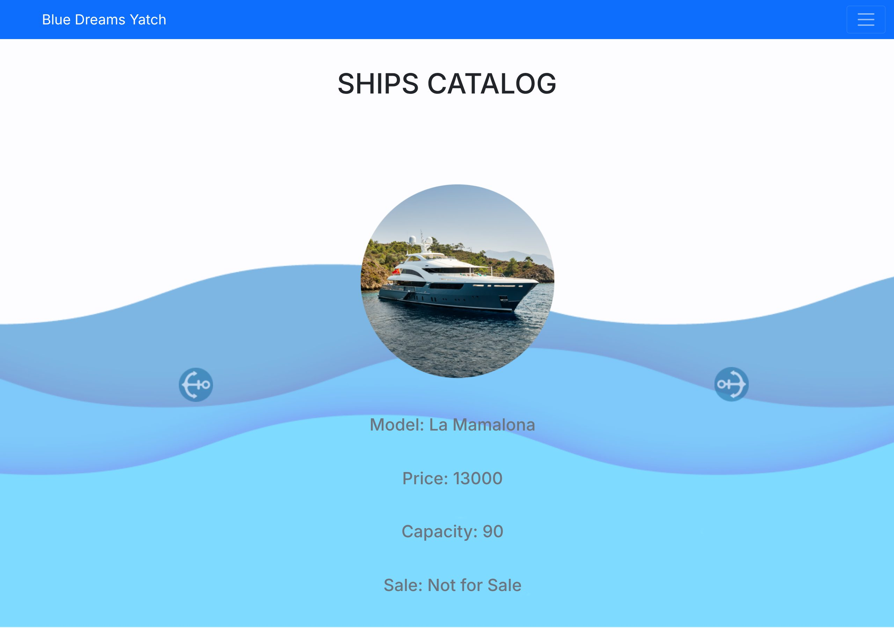
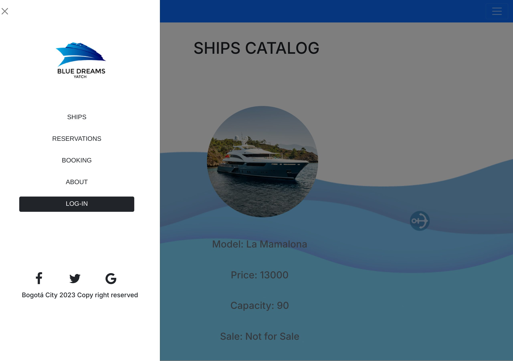
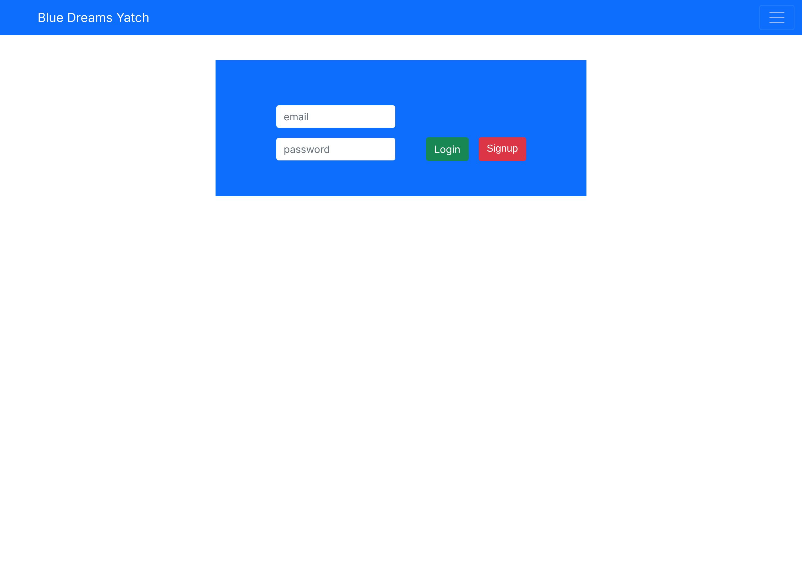
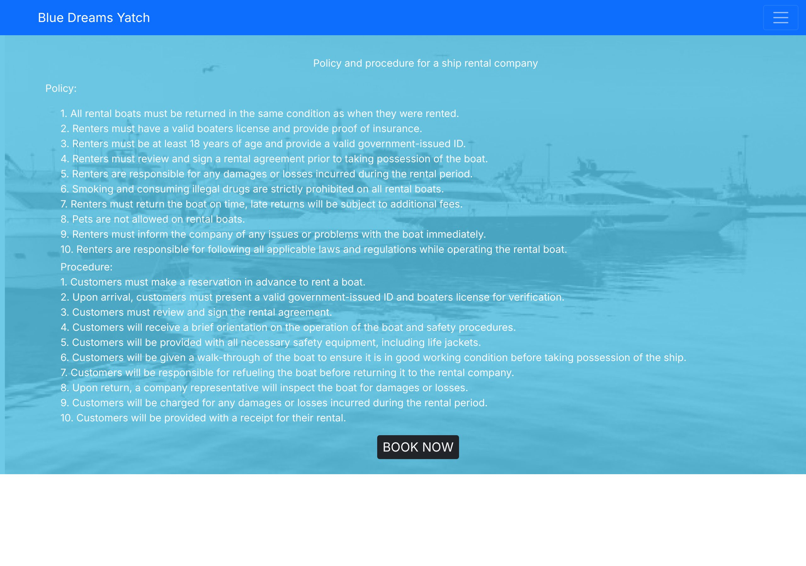
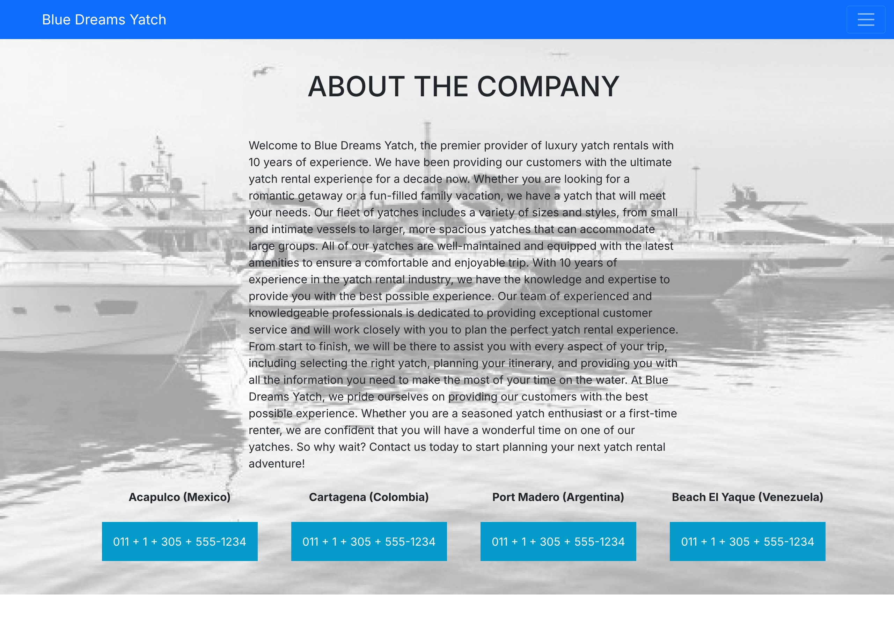

App de alquiler de yates hecha por un equipo remoto de cinco personas en Microverse: registro, login, catálogo de barcos y reservas. Front en React con Redux Toolkit y API en Ruby on Rails. A yacht rental app built by a remote team of five at Microverse: sign-up, log-in, a ship catalog and reservations. A React front end with Redux Toolkit and a Ruby on Rails API.
El backend original estaba en Heroku y ya no está online, así que estas capturas son de la app corriendo localmente con los datos de ejemplo del repositorio. Las fotos de los barcos usan las imágenes del propio front, porque los links del seed apuntaban a sitios externos. The original back end ran on Heroku and is no longer online, so these screenshots show the app running locally with the repository’s sample data. Ship photos use the front end’s own images, since the seed linked to external sites.
Carrusel con cada yate: modelo, precio, capacidad y si está a la venta. Los datos vienen de la API de Rails a través de RTK Query.A carousel of yachts with model, price, capacity and sale status. Data comes from the Rails API through RTK Query.

Menú lateral de Bootstrap con barcos, reservas, reservar, información y acceso.A Bootstrap side menu with ships, reservations, booking, about and log-in.

Registro y login contra Devise con tokens JWT: el token que devuelve la API se usa en las llamadas protegidas.Sign-up and log-in against Devise with JWT tokens: the token returned by the API is sent with protected calls.

Políticas y procedimiento de alquiler antes de pasar a reservar.Rental policy and procedure before moving on to book.

Página institucional de la empresa ficticia.An about page for the fictional company.

Rails 7 con PostgreSQL, Devise y devise-jwt para la autenticación, y RSpec para los tests.Rails 7 with PostgreSQL, Devise and devise-jwt for authentication, and RSpec for tests.
| POST | /signup | Registro (Devise)Sign up (Devise) |
| POST · DELETE | /login · /logout | Inicio y cierre de sesión con JWTLog in and out with JWT |
| GET · POST · DELETE | /ships/index · create · destroy | Catálogo de barcosShip catalog |
| GET · POST · PUT · DELETE | /reservations/index · create · update · destroy | Reservas del usuarioUser reservations |